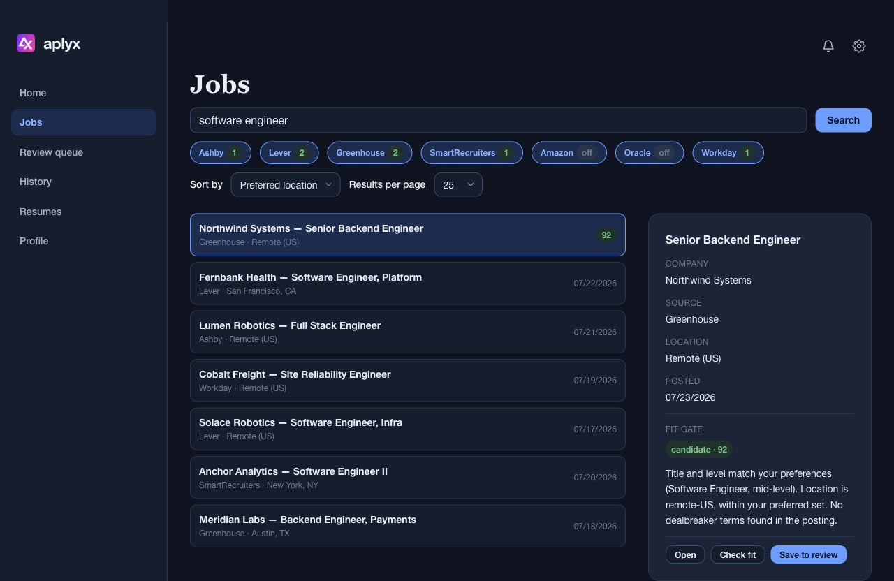

Multi-board search
Ashby, Lever, Greenhouse, Workday, SmartRecruiters, and more, searched in one pass and deduplicated automatically, so the same posting never shows up twice just because it's listed on two boards. Every result is fit-checked against your preferences right in the same view, so you can act without switching screens.
